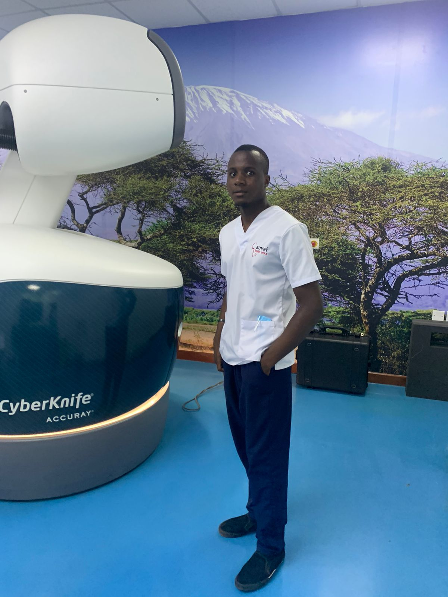
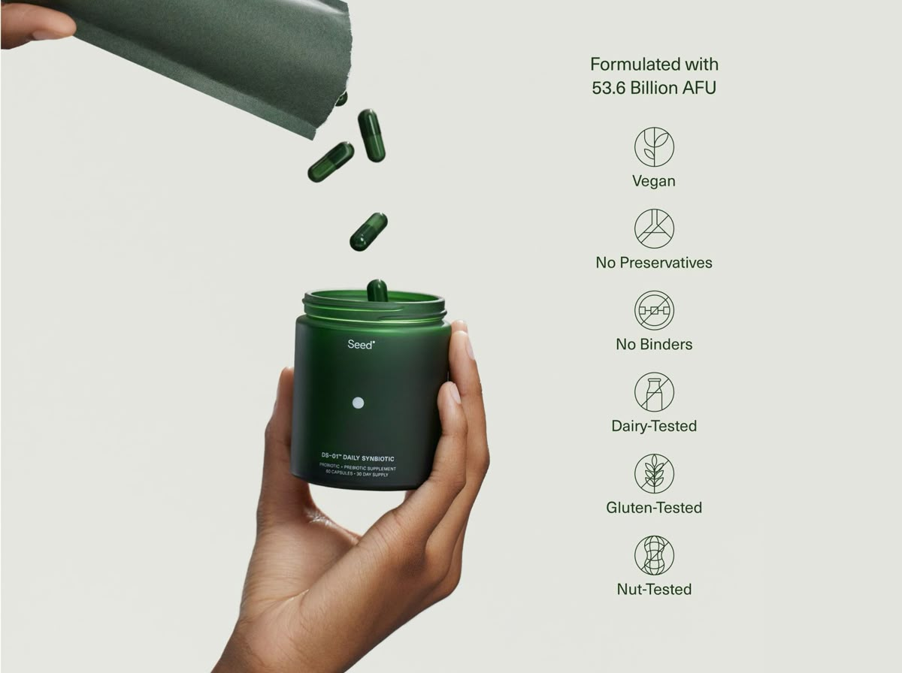

Health AI
Exploring responsible artificial intelligence for prediction, education, decision support and personalised health experiences.
HEALTH × TECHNOLOGY × HUMAN POSSIBILITY
I’m Jason Kimoia health technology enthusiast and software developer building at the intersection of healthcare, artificial intelligence and digital innovation.

01 / THE IDEA
My ambition is to create practical technology that makes health information more accessible, decisions more informed, systems more efficient and care more human. I am interested in the problems that sit between a clinical reality and a technological possibility and in building the bridge.
02 / MY STORY
From healthcare to buildingMy background in nursing gave me something technology alone cannot provide: proximity to real healthcare problems.
It taught me to look beyond the interface and ask what happens to the person on the other side. That perspective now shapes how I approach software, artificial intelligence, digital education and health innovation.
I do not see technology as a replacement for people. I see it as an instrument one that can give good people better information, better tools and more time to do meaningful work.

03 / DESIGNING HEALTH EXPERIENCES
From clinical technology to digital products, I am interested in the full experience: clarity, trust, accessibility and the quiet details that make people willing to use a system.
04 / WHAT I BUILD
Selected directionsExploring responsible artificial intelligence for prediction, education, decision support and personalised health experiences.
Designing simple digital systems that solve practical problems across health education, workflows and patient-facing experiences.
Building modern learning experiences that make health knowledge more engaging, accessible and actionable.
Turning observations from the real world into focused products — starting with the problem, not the technology.
05 / PRINCIPLES
Technology should solve a meaningful problem.
Elegant systems should still feel understandable and humane.
Useful innovation can begin with one overlooked problem.
The goal is not simply to build products, but to contribute to a better future.
06 / THE VISION
Long horizonI dream of building products and organisations from Africa that are not defined by where they started, but by the scale of the problems they are capable of solving.
07 / WHY I BUILD
And I intend to be part of the people who build it.